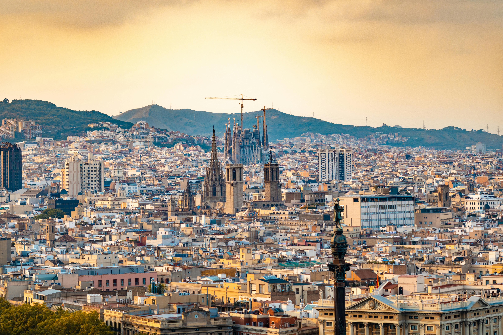
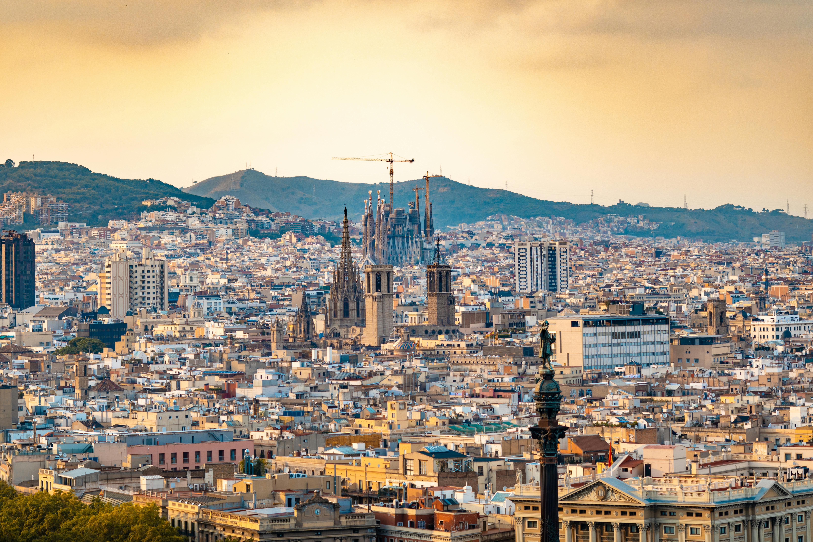

Barcelona is one of the most vibrant and culturally rich cities in Europe.Located in northeastern Spain, it is famous for its stunning architecture, particularly the works of Antoni Gaudí, such as the iconic Sagrada Família and Park Güell.Barcelona offers beautiful beaches, a lively culinary scene, and a deep passion for football, home to the legendary FC Barcelona. With its unique blend of history, art, and modern life, the city attracts millions of visitors every year seeking both adventure and inspiration.
FC Barcelona
FC Barcelona is more than just a football club; it is a symbol of excellence and passion. With a history full of triumphs, including multiple La Liga titles and Champions League wins, Barcelona continues to inspire millions of fans around the world.
Gaudí's Masterpieces
Barcelona is renowned for its unique and captivating architecture, largely influenced by Antoni Gaudí. The Sagrada Familia and Park Güell are just a few of the stunning works of art you can explore, blending natural forms with creative genius.
Barcelona Beaches
Barcelona is not just about history and culture; it is also a city of beautiful beaches. Whether you're looking to relax under the sun or enjoy the vibrant beach scene, Barcelona’s coastline offers the perfect escape.
Barcelona is one of the most vibrant and culturally rich cities in Europe.Located in northeastern Spain, it is famous for its stunning architecture, particularly the works of Antoni Gaudí, such as the iconic Sagrada Família and Park Güell.Barcelona offers beautiful beaches, a lively culinary scene, and a deep passion for football, home to the legendary FC Barcelona. With its unique blend of history, art, and modern life, the city attracts millions of visitors every year seeking both adventure and inspiration.
Barcelona is one of the most vibrant and culturally rich cities in Europe.Located in northeastern Spain, it is famous for its stunning architecture, particularly the works of Antoni Gaudí, such as the iconic Sagrada Família and Park Güell.Barcelona offers beautiful beaches, a lively culinary scene, and a deep passion for football, home to the legendary FC Barcelona. With its unique blend of history, art, and modern life, the city attracts millions of visitors every year seeking both adventure and inspiration.